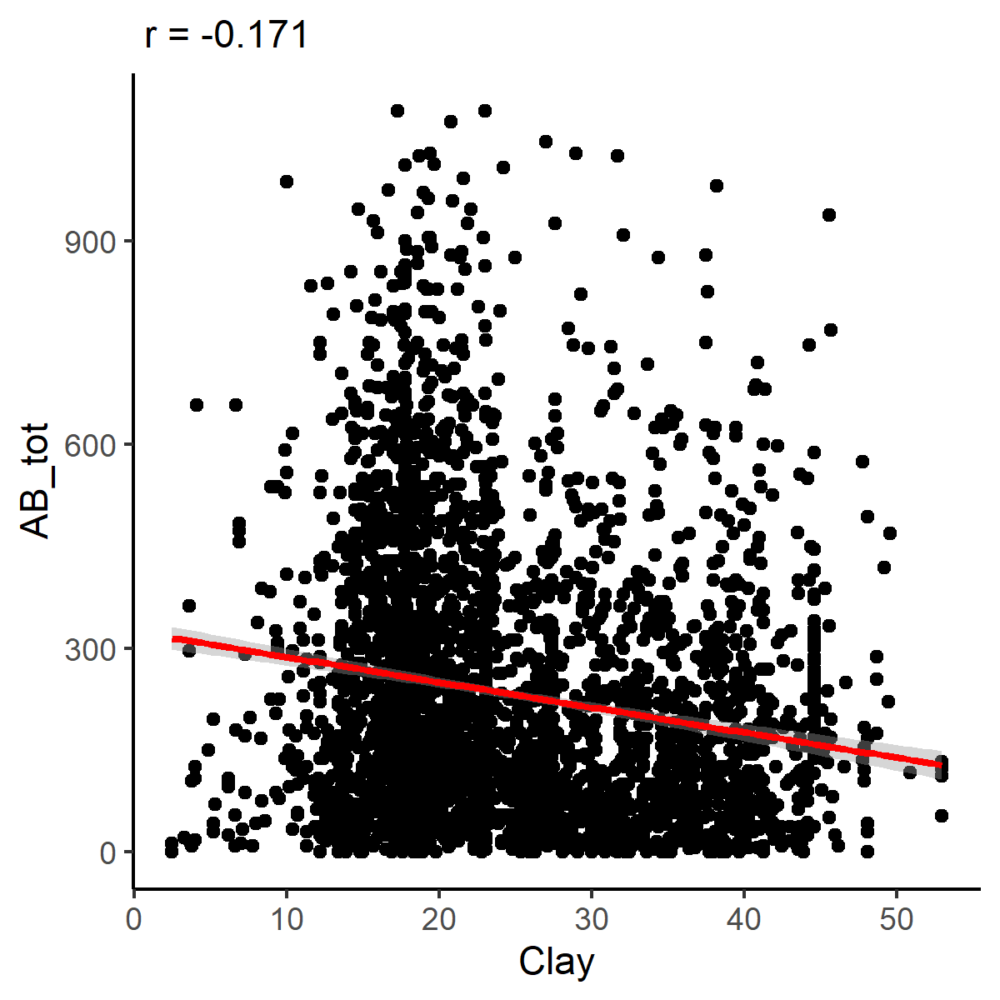
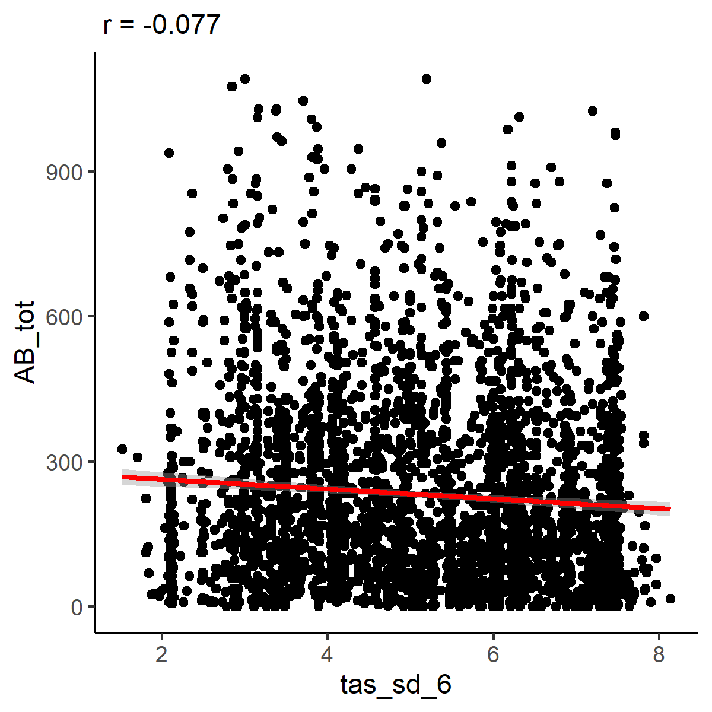
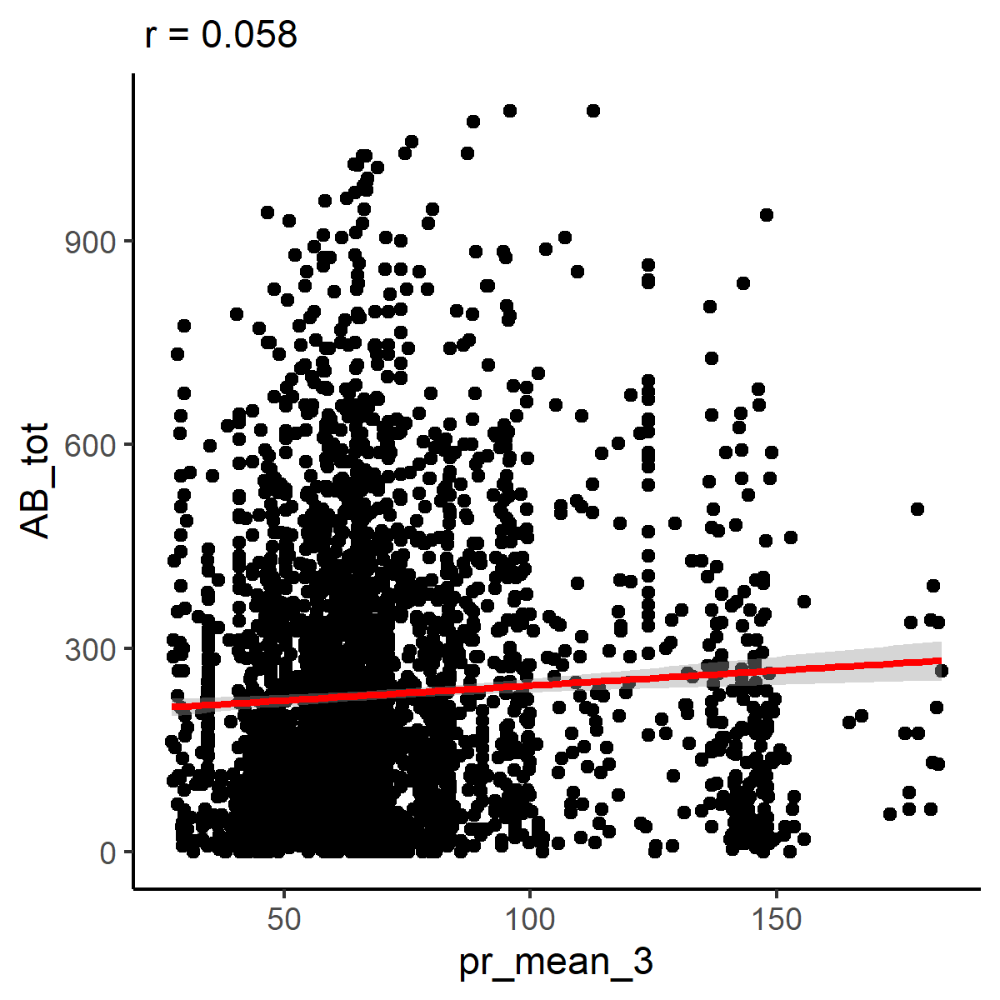
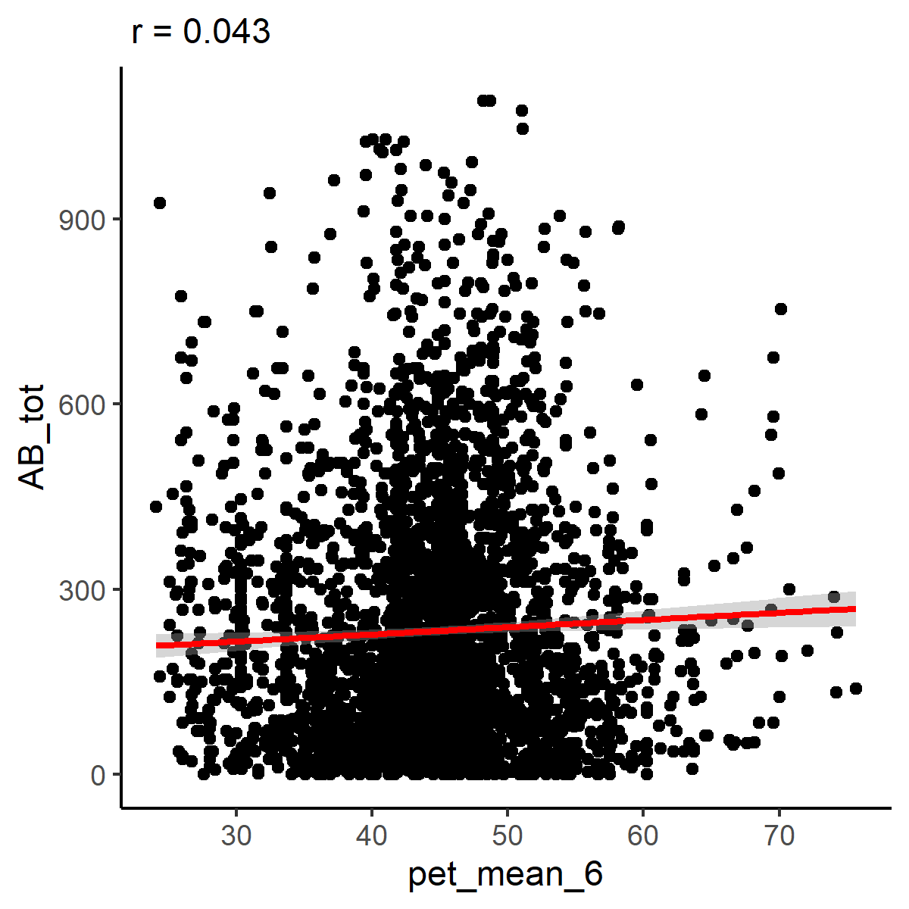
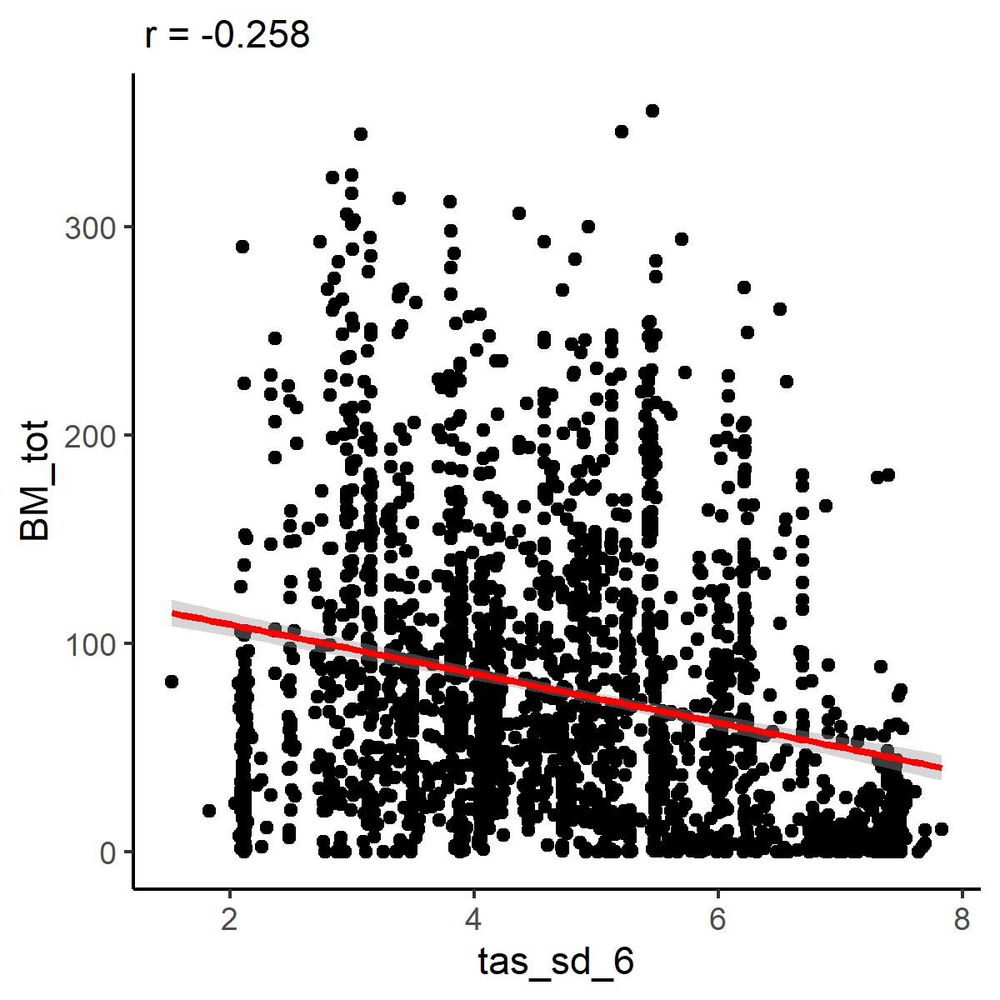
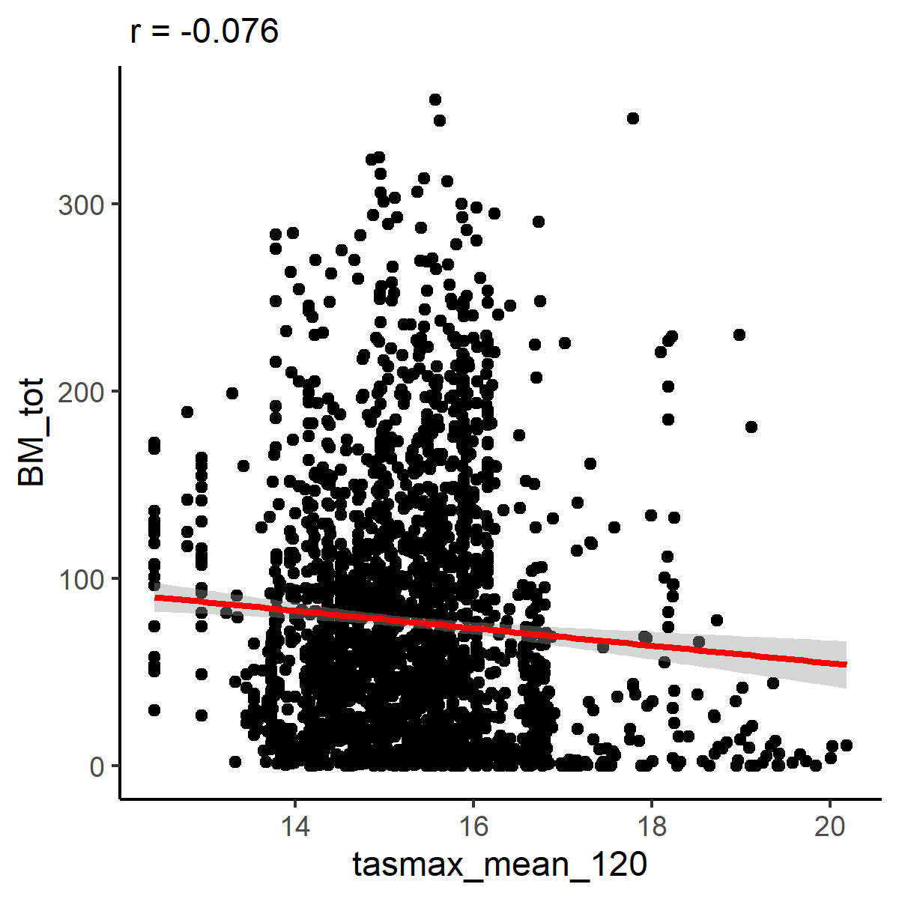
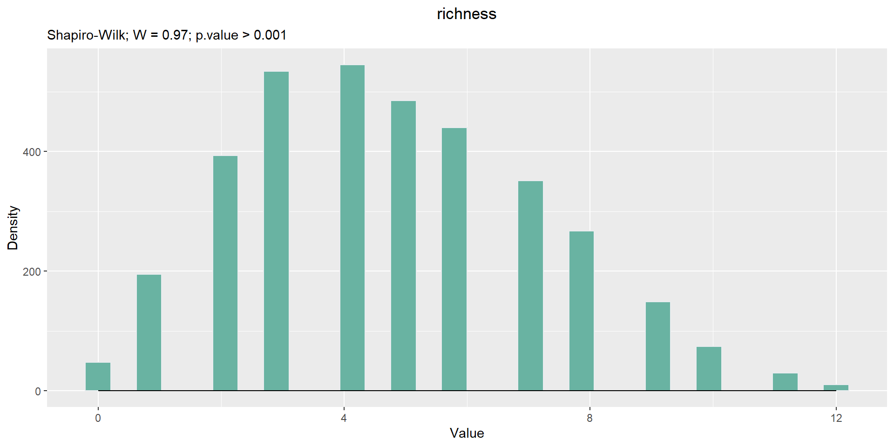

LandWorm 2.0
Modeling and predicting earthworm diversity and distribution in France
2024-07-22
3.1 Total abundance

Sppression des valeurs aberrantes
- The database therefore changes from 4204 to 4163 observations.
3.2 Total biomass

Sppression des valeurs aberrantes
- The database therefore changes from 4163 to 4143 observations.
3.3 Total taxonomic richness
Total richness calculation method
- Removal of columns with only NA and/or only 0
- Merging sub-species with their species
Voici la liste des sp a fusionnée: Code
# function pour fusion les sous especes a leurs especes
sp_identique = function(df, nom_sous_espece, nom_espece ) {
# Si les deux colonnes existent dans df
if (nom_sous_espece %in% names(df) && nom_espece %in% names(df)) {
# Addition des valeurs des deux colonnes et stockage du résultat dans nom_espece
# df[[nom_espece]] = df[[nom_sous_espece]] + df[[nom_espece]]
df[[nom_espece]] = rowSums(df[,c(nom_sous_espece,nom_espece)], na.rm = TRUE)
df[[nom_sous_espece]] = NULL
# Si nom_espece n'existe pas dans df mais nom_sous_espece existe
} else if (nom_sous_espece %in% names(df) && !(nom_espece %in% names(df))) {
# on renome nom_sous_espece par nom_espece
names(df)[names(df) == nom_sous_espece] <- nom_espece
df[[nom_sous_espece]] = NULL
}
return(df)
}
for (i in 1:nrow(df_sp_sous_sp)){
landworm_sp = sp_identique(df = landworm_sp,nom_sous_espece = df_sp_sous_sp[i,"col_sp_origines"],
nom_espece = df_sp_sous_sp[i,"col_sp_concatener"])
}- Identify columns beginning with AB_
- Deletion of AB_ columns that are not species
Code
# On supprimme les colonnes AB_ qui ne sont pas des espèces dans le calcule
ab_supprimee = c("AB_AD",
"AB_JV",
"AB_SA",
"AB_STAD_X",
"AB_indéterminable",
"AB_Indéterminable",
"AB_indéterminable_endogeic",
"AB_tot",
"AB_Indéterminable_epigeic",
"AB_indéterminable_endogeic",
"AB_Ep.X",
"AB_vide",
"AB_Ep.X1",
"AB_Ep.X2",
"AB_A.X",
"AB_Adult",
"AB_cocon",
"AB_indéterminé",
"AB_Juvenile",
"AB_Sub.adult",
"AB_Indéterminé")
colonnes_AB <- colonnes_AB[!colonnes_AB %in% ab_supprimee]
cat("A ce stade, la liste des especes est: \n")A ce stade, la liste des especes est: Code
- Calculate richness by assigning 1 to each column if the value is different from 0 and NA
A ce stade, la richesse varie de:
Code
# On calcule la richesse en attribiant 1 à chaque colonne si la valeur est différent de 0 et de NA
landworm_sp$Richesse_tot <- 0
landworm_sp$Richesse_tot <- rowSums(!is.na(landworm_sp[colonnes_AB]) & landworm_sp[colonnes_AB] != 0)
#sum (is.na(landworm_sp$Richesse_tot) )
summary(landworm_sp$Richesse_tot) Min. 1st Qu. Median Mean 3rd Qu. Max.
0.000 3.000 5.000 4.923 7.000 14.000 - Décremmentation de la richesse
Voir code:
Code
# Apres calcule richesse ------------------------------------------------------
sp_prorata <- function(df, sp_x, sp) {
name_col <- names(df)
# si la colonne sp_x est présente
if (sp_x %in% name_col) {
# pour chaque ligne
for (i in 1:nrow(df)) {
# si les valeurs de la colonne sp_x ne sont ni 0 ni NA
if (!is.na(df[i, sp_x]) && df[i, sp_x] != 0) {
# Si la somme des ab des sp est différente de 0
if (rowSums(df[i, sp], na.rm = TRUE) != 0) {
# La richesse diminue de 1
df[i, "Richesse_tot"] <- df[i, "Richesse_tot"] - 1
}
}
}
}
return(df)
}
# Pour AB_Allolobophora_sp ------------------------------------------
sp_x = "AB_Allolobophora_sp"
sp=c("AB_Allolobophora_burgondiae",
"AB_Allolobophora_chlorotica",
"AB_Aporrectodea_cupulifera",
"AB_Aporrectodea_icterica",
"AB_Aporrectodea_limicola",
"AB_Aporrectodea_rosea")
# df= landworm_sp[, c(sp_x,sp, "Richesse_tot")]
# df=df[!df$AB_Allolobophora_sp == 0,]
# df=df[! is.na(df$AB_Allolobophora_sp),]
# df$som = rowSums(df[,sp], na.rm=TRUE)
# View(df)
#
# dff <- sp_prorata(landworm_sp, sp_x, sp)
# dff= dff[, c(sp_x,sp, "Richesse_tot")]
# dff=dff[!dff$AB_Allolobophora_sp == 0,]
# dff=dff[! is.na(dff$AB_Allolobophora_sp),]
# dff$som = rowSums(dff[,sp], na.rm=TRUE)
# View(dff)
landworm_sp <- sp_prorata(landworm_sp, sp_x, sp)
# Pour AB_Aporrectodea_indéterminable ------------------------------------------
sp_x = "AB_Aporrectodea_indéterminable"
sp=c("AB_Allolobophora_burgondiae",
"AB_Allolobophora_chlorotica",
"AB_Aporrectodea_cupulifera",
"AB_Aporrectodea_icterica",
"AB_Aporrectodea_limicola",
"AB_Aporrectodea_rosea")
landworm_sp <- sp_prorata(landworm_sp, sp_x, sp)
# Pour AB_Aporrectodea_sp ------------------------------------------
sp_x = "AB_Aporrectodea_sp"
sp=c("AB_Aporrectodea_giardi",
"AB_Aporrectodea_longa",
"AB_Aporrectodea_nocturna",
"AB_Aporrectodea_ripicola",
"AB_Aporrectodea_longa/giardi")
landworm_sp <- sp_prorata(landworm_sp, sp_x, sp)
# Pour AB_Dendrobaena_sp ------------------------------------------
# Tous les "Dendrobaena" et "Dendrodrilus_rubidus" + Satchellius mammalis
sp_x = "AB_Dendrobaena_sp"
sp=c("AB_Dendrobaena_alpina",
"AB_Dendrobaena_attemsi",
"AB_Dendrobaena_cognettii",
"AB_Dendrobaena_hortensis",
"AB_Dendrobaena_octaedra",
"AB_Dendrodrilus_rubidus",
"AB_Satchellius_mammalis")
landworm_sp <- sp_prorata(landworm_sp, sp_x, sp)
# Pour AB_Eisenia_sp ------------------------------------------
# Tous les Eisenia possible
sp_x = "AB_Eisenia_sp"
sp=c("AB_Eisenia_andrei",
"AB_Eisenia_fetida",
"AB_Eisenia_veneta",
"AB_Eiseniella_tetraedra")
landworm_sp <- sp_prorata(landworm_sp, sp_x, sp)
# Pour AB_Lumbricus_sp ------------------------------------------
# Tous les Lumbricus sauf Lumbricus castaneus ?
sp_x = "AB_Lumbricus_sp"
sp=c("AB_Lumbricus_centralis",
"AB_Lumbricus_festivus",
"AB_Lumbricus_friendi",
"AB_Lumbricus_herculeus",
"AB_Lumbricus_meliboeus",
"AB_Lumbricus_rubellus" ,
"AB_Lumbricus_terrestris",
"AB_Lumbricus_friendi/centralis")
landworm_sp <- sp_prorata(landworm_sp, sp_x, sp)
# Pour AB_Microscolex_sp ------------------------------------------
# Tous les AB_Microscolex
sp_x = "AB_Microscolex_sp"
sp=c("AB_Microscolex_dubius",
"AB_Microscolex_phosphoreus")
landworm_sp <- sp_prorata(landworm_sp, sp_x, sp)
# Pour AB_Octolasion_sp ------------------------------------------
# Tous les AB_Octolasion
sp_x = "AB_Octolasion_sp"
sp=c("AB_Octodrilus_complanatus",
"AB_Octolasion_cyaneum",
"AB_Octolasion_lacteum")
landworm_sp <- sp_prorata(landworm_sp, sp_x, sp)
# Pour AB_Pheretima_indéterminable ------------------------------------------
# AB_Pheritima_Diffringens
sp_x = "AB_Pheretima_indéterminable"
sp=c("AB_Pheritima_Diffringens", "AB_Pheritima_Diffringens")
landworm_sp <- sp_prorata(landworm_sp, sp_x, sp)
# Pour AB_Prosellodrilus_sp ------------------------------------------
# Tous les Prosellodrilus
sp_x = "AB_Prosellodrilus_sp"
sp=c("AB_Prosellodrilus_amplisetosus",
"AB_Prosellodrilus_fragilis",
"AB_Prosellodrilus_occidentalis",
"AB_Prosellodrilus_praticola",
"AB_Prosellodrilus_pyrenaicus")
landworm_sp <- sp_prorata(landworm_sp, sp_x, sp)
# Pour AB_Scherotheca_sp ------------------------------------------
# Tous les AB_Scherotheca_sp
sp_x = "AB_Scherotheca_sp"
sp=c("AB_Satchellius_mammalis",
"AB_Scherotheca_aquitana",
"AB_Scherotheca_dinoscolex",
"AB_Scherotheca_nivicola",
"AB_Scherotheca_porotheca",
"AB_Scherotheca_rhodana",
"AB_Scherotheca_savignyi")
landworm_sp <- sp_prorata(landworm_sp, sp_x, sp)- Rules 3: Si le Owner de la parcelle est DC ou GP alors si Aporrectodea_trapezoides et/ou Aporrectodea_tuberculata sont presentent dans la parcelle alors si Aporrectodea_caliginosa est presente aussi dans la parcelle alors la richesse diminue de 1.
Code
# dff <- data.frame(
# owner = c("DC", "GP", "XX", "DC"),
# AB_Aporrectodea_trapezoides = c(1, NA, 0, 2),
# AB_Aporrectodea_tuberculata = c(NA, 0, 1, 3),
# AB_Aporrectodea_caliginosa = c(2, 1, NA, 4),
# Richesse_tot = c(10, 20, 30, 40)
# )
# df <- dff
df=landworm_sp
for (i in 1:nrow(df)) {
# Si owner est "DC" ou "GP"
if (df[i, "owner"] %in% c("DC", "GP")) {
# si AB_Aporrectodea_trapezoides ou AB_Aporrectodea_tuberculata sont présents et non nuls
if ((!is.na(df[i, "AB_Aporrectodea_trapezoides"]) &&
df[i, "AB_Aporrectodea_trapezoides"] != 0)
||
(!is.na(df[i, "AB_Aporrectodea_tuberculata"]) &&
df[i, "AB_Aporrectodea_tuberculata"] != 0)) {
# si AB_Aporrectodea_caliginosa est présente et non nulle
if (!is.na(df[i, "AB_Aporrectodea_caliginosa"]) &&
df[i, "AB_Aporrectodea_caliginosa"] != 0) {
# La richesse diminue de 1 pour cette ligne
df[i, "Richesse_tot"] <- df[i, "Richesse_tot"] - 1
}
}
}
}
landworm_sp = df- Rules 4: Si la Richesse_tot est superieur à 2 et que AB_Lumbricidae et/ou AB_Oligochaeta_so est presente (differente de 0 et de NA), la Richesse_tot dimunue de -1
- Verifications

Sppression des valeurs aberrantes
- The database therefore changes from 4143 to 4143 observations.
Il n y a pas de valeurs aberant. Cependant, il y a 11 parcelles qui ont une richesse superieur a 12, a garder ou a supprimer ?
Details des parcelles a forte richesse (sup à 12):
I remove the 11 plots with richness greater than 12.
- The database therefore changes from 4143 to 4132 observations.
5.3 Sand
Extracted values (g/kg, 0 - 30 cm)


- The database therefore changes from 3936 to 3934 observations.
5.6 Soil organic carbone (g/kg)


- The database therefore changes from 3934 to 3912 observations.
5.7 pH (H2O)


- The database therefore changes from 3912 to 3912 observations.
6.4 1. At 3 months
- Mean


The database therefore changes from 3882 to 3876 observations.
- Standard deviation


- The database therefore changes from 3876 to 3876 observations.
6.5 2. At 6 months
- Mean


The database therefore changes from 3876 to 3876 observations.
Standard deviation


- The database therefore changes from 3876 to 3876 observations.
6.6 3. At 120 months
- Mean


The database therefore changes from 3876 to 3870 observations.
Standard deviation


- The database therefore changes from 3870 to 3870 observations.
:::
6.7 Mean daily maximum 2m air temperature (°C) = tasmax
- Mean


The database therefore changes from 3870 to 3849 observations.
- Standard deviation


- The database therefore changes from 3849 to 3849 observations.
- Mean


The database therefore changes from 3849 to 3849 observations.
Standard deviation


- The database therefore changes from 3849 to 3849 observations.
- Mean


The database therefore changes from 3849 to 3849 observations.
Standard deviation


- The database therefore changes from 3849 to 3849 observations.
6.8 Mean daily maximum 2m air temperature (°C) = tasmin
- Mean


The database therefore changes from 3849 to 3849 observations.
- Standard deviation


- The database therefore changes from 3849 to 3849 observations.
- Mean


The database therefore changes from 3849 to 3849 observations.
Standard deviation


- The database therefore changes from 3849 to 3849 observations.
- Mean


The database therefore changes from 3849 to 3847 observations.
Standard deviation


- The database therefore changes from 3847 to 3847 observations.
6.9 Annual precipitation (mm/month) = pr
- Mean


The database therefore changes from 3847 to 3826 observations.
- Standard deviation


- The database therefore changes from 3826 to 3822 observations.
- Mean


The database therefore changes from 3822 to 3803 observations.
Standard deviation


- The database therefore changes from 3803 to 3803 observations.
- Mean


The database therefore changes from 3803 to 3793 observations.
Standard deviation


- The database therefore changes from 3793 to 3784 observations.
6.10 Potential evapotranspiration (mm/month) => pet
- Mean


The database therefore changes from 3784 to 3784 observations.
- Standard deviation


- The database therefore changes from 3784 to 3784 observations.
- Mean


The database therefore changes from 3784 to 3550 observations.
Standard deviation


- The database therefore changes from 3550 to 3545 observations.
- Mean


The database therefore changes from 3545 to 3523 observations.
Standard deviation


- The database therefore changes from 3523 to 3521 observations.
7.3 Relationship between the abundance and the predictors
- AB_tot & LC_- AB_tot & Sand- AB_tot & Silt- AB_tot & Clay
- AB_tot & pH- AB_tot & N- AB_tot & P- AB_tot & K- AB_tot & CN- AB_tot & CaCO3- AB_tot & C_org- AB_tot & tas_mean_3- AB_tot & tas_mean_6- AB_tot & tas_mean_120- AB_tot & tas_sd_3- AB_tot & tas_sd_6
- AB_tot & tas_sd_120- AB_tot & tasmax_mean_3- AB_tot & tasmax_mean_6- AB_tot & tasmax_mean_120- AB_tot & tasmax_sd_3- AB_tot & tasmax_sd_6- AB_tot & tasmax_sd_120- AB_tot & tasmin_mean_3- AB_tot & tasmin_mean_6- AB_tot & tasmin_mean_120- AB_tot & tasmin_sd_3- AB_tot & tasmin_sd_6- AB_tot & tasmin_sd_120- AB_tot & pr_mean_3
- AB_tot & pr_mean_6- AB_tot & pr_mean_120- AB_tot & pr_sd_3- AB_tot & pr_sd_6- AB_tot & pr_sd_120- AB_tot & pet_mean_3- AB_tot & pet_mean_6
- AB_tot & pet_mean_120
- AB_tot & pet_sd_3- AB_tot & pet_sd_6- AB_tot & pet_sd_1207.4 Relationship between the biomass and the predictors
- BM_tot & LC_- BM_tot & Sand- BM_tot & Silt- BM_tot & Clay- BM_tot & pH- BM_tot & N- BM_tot & P- BM_tot & K- BM_tot & CN- BM_tot & CaCO3- BM_tot & C_org- BM_tot & tas_mean_3- BM_tot & tas_mean_6- BM_tot & tas_mean_120- BM_tot & tas_sd_3- BM_tot & tas_sd_6
- BM_tot & tas_sd_120- BM_tot & tasmax_mean_3
- BM_tot & tasmax_mean_6- BM_tot & tasmax_mean_120
- BM_tot & tasmax_sd_3
- BM_tot & tasmax_sd_6- BM_tot & tasmax_sd_120- BM_tot & tasmin_mean_3- BM_tot & tasmin_mean_6- BM_tot & tasmin_mean_120- BM_tot & tasmin_sd_3- BM_tot & tasmin_sd_6- BM_tot & tasmin_sd_120- BM_tot & pr_mean_3
- BM_tot & pr_mean_6- BM_tot & pr_mean_120- BM_tot & pr_sd_3- BM_tot & pr_sd_6- BM_tot & pr_sd_120- BM_tot & pet_mean_3- BM_tot & pet_mean_6- BM_tot & pet_mean_120- BM_tot & pet_sd_3- BM_tot & pet_sd_6- BM_tot & pet_sd_1207.5 Relationship between the richness and the predictors
- Richesse_tot & LC_
- Richesse_tot & Sand
- Richesse_tot & Silt
- Richesse_tot & Clay
- Richesse_tot & pH
- Richesse_tot & N
- Richesse_tot & P
- Richesse_tot & K
- Richesse_tot & CN
- Richesse_tot & CaCO3
- Richesse_tot & C_org
- Richesse_tot & tas_mean_3
- Richesse_tot & tas_mean_6
- Richesse_tot & tas_mean_120
- Richesse_tot & tas_sd_3
- Richesse_tot & tas_sd_6
- Richesse_tot & tas_sd_120
- Richesse_tot & tasmax_mean_3
- Richesse_tot & tasmax_mean_6
- Richesse_tot & tasmax_mean_120
- Richesse_tot & tasmax_sd_3
- Richesse_tot & tasmax_sd_6
- Richesse_tot & tasmax_sd_120
- Richesse_tot & tasmin_mean_3
- Richesse_tot & tasmin_mean_6
- Richesse_tot & tasmin_mean_120
- Richesse_tot & tasmin_sd_3
- Richesse_tot & tasmin_sd_6
- Richesse_tot & tasmin_sd_120
- Richesse_tot & pr_mean_3
- Richesse_tot & pr_mean_6
- Richesse_tot & pr_mean_120
- Richesse_tot & pr_sd_3
- Richesse_tot & pr_sd_6
- Richesse_tot & pr_sd_120
- Richesse_tot & pet_mean_3
- Richesse_tot & pet_mean_6
- Richesse_tot & pet_mean_120
- Richesse_tot & pet_sd_3
- Richesse_tot & pet_sd_6
- Richesse_tot & pet_sd_120
7.6 Total abundance distributions

- Transformation sqrt
lamda = 0.3
7.7 Total biomass distributions
- Transformation sqrt
lamda = 0.4
7.8 Total taxonomic richness distributions

- Transformation sqrt

lamda = 0.6
14.1 Abundance


14.2 Biomass


14.3 Richness


15.7 Approximate earthworm diversity